صفحه ۱۶۶
کار با کلاسهای واکنشگرای Bootstrap
کار کارگاهی
در این کارگاه با بهکارگیری کلاسهای بوتاسترپ تغییراتی را در صفحه index.html ایجاد خواهید کرد.
بخش اول استفاده از کلاسهای row-cols: در کارگاه قبل اندازه ستونها توسط کلاس col-sm-3 مشخص شد. این کلاس باعث میشود که در دستگاههای بزرگتر از 576 پیکسل، ستونها در کنار هم نمایش داده شوند و در دستگاههای کوچکتر، بهصورت پشته (stack) روی هم قرار گیرند.
بوت استرپ دارای کلاس واکنشگرای دیگری با نام row-cols است که امکان تعیین تعداد ستونها (در هر ردیف) را در دستگاههای مختلف فراهم میکند؛ بهگونهای که اندازه ستونها در عنصر row مشخص میشود، نه در عناصر .col جدول زیر نحوۀ استفاده از این دو روش را نمایش میدهد.
روش تعیین اندازه ستون
توضیحات
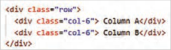
تعیین اندازۀ ستون در
این کد یک سطر (row) با دو ستون (col-6) ایجاد میکند. هر ستون نیمی از
عناصر col
٦ ) را اشغال مینماید.
__
پهنای سطر (٢١
B
A
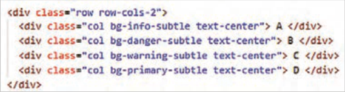
B
A
D
C
تعیین اندازه ستون در عناصر row
کلاس row-cols-2 باعث ایجاد 2 ستون در هر سطر میگردد. در کد فوق 4 عنصر col وجود دارد؛ بنابراین دو سطر، هر یک حاوی دو ستون تولید میشود.
در صورت افزودن تعداد بیشتری از col، ستونها به ردیف بعدی منتقل میشوند.
Bootstrap بهطور خودکار عرض ستونها را تنظیم میکند؛ بنابراین نیازی به تعیین اندازه دستی برای هر ستون ندارید.
صفحه ۱۶۷
1 در فایل index.html کدهای زیر را بعد از جدیدترین محصولات اضافه کنید:
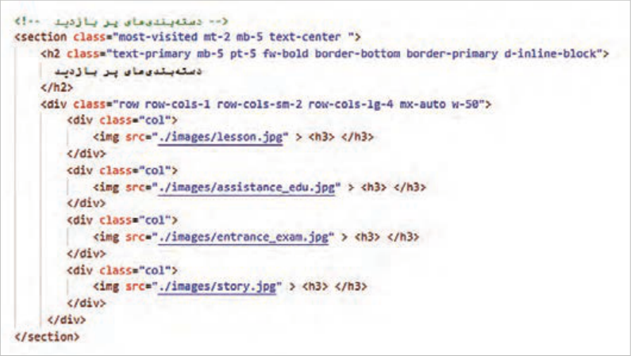
فایل را ذخیره کنید و نتیجه را در مرورگر بررسی کنید. سپس مراحل زیر را انجام دهید و بعد از هر مرحله، نتیجه را مشاهده کنید.
2 برای تمام تصاویر از کلاسهای border، border-4 و rounded-circle استفاده کنید تا تصاویر به شکل گرد و دارای خط دور باشند.
3 برای هر کلاس col کلاس mb-3 را اضافه کنید تا تصاویر در نمای موبایل از تصویر زیرین خود فاصله بگیرند.
4 برای تنظیم اندازه تصویر، استایل شکل زیر را به فایل styles.css اضافه کنید.
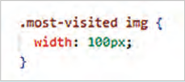
عنوان هر محصول را داخل برچسب<h3> قرار دهید:
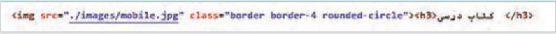
5 برای تنظیم اندازه متن h3 و فاصله آن از تصویر بالا، استایل شکل زیر را بنویسید:
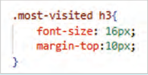
صفحه ۱۶۸
انتظار میرود که بعد از سرانجام مراحل قبل خروجی زیر در نمای دسکتاپ حاصل شود.
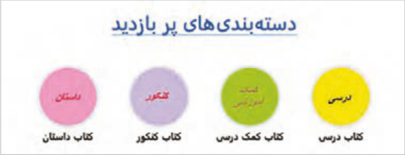
6 برای مشاهده وضعیت تصاویر در دستگاههای مختلف، کلید f12 را بفشارید. در پاسخ به پنجره پیغام، دکمه Open Dev tools را انتخاب کنید. مطابق تصویر زیر از نوار ابزار بالای صفحه دکمه Toggle Device را انتخاب کنید:
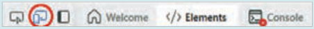
7 از کشوی Dimension نوع دستگاه را انتخاب کنید و سپس وضعیت تصاویر را مشاهده کنید.
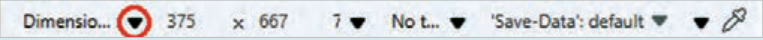
8 در صورت تمایل گزینه Responsive را از درون کشو انتخاب کنید و سپس با درگ کردن لبه سمت راست دستگاه، پهنای آن را به دلخواه تغییر دهید.
عملکرد کلاسهای row-cols در کارگاه فوق به شرح زیر است:
row-cols-sm-1: در دستگاههایی با پهنای 576 پیکسل و بیشتر، تصاویر محصولات در 2 ستون نمایش داده میشود.
row-cols-lg-2: در دستگاههایی با پهنای 992 پیکسل و بیشتر، تصاویر محصولات در 4 ستون نمایش داده میشود.
بخش دوم استفاده از کلاسهای container کلاسهای container واکنشگرا هستند و پهنای متفاوتی را در دستگاههای مختلف برای عنصر نگهدارنده ایجاد میکنند.
صفحه ۱۶۹
کلاسهای container و پهنای آنها در دستگاههای مختلف
XX-Large
X-large
Large
Medium
Small
Extra small
1400px≤
1200px≤
992px≤
768px≤
576px≤
576px<
1320px
1140px
960px
720px
540px
%100
.Container
1320px
1140px
960px
720px
540px
%100
.Container-sm
1320px
1140px
960px
720px
%100
%100
.Container-md
1320px
1140px
960px
%100
%100
%100
.Container-lg
1320px
1140px
%100
%100
%100
%100
.Container-xl
1320px
%100
%100
%100
%100
%100
.Container-xxl
%100
%100
%100
%100
%100
%100
.Container-fluid
در کارگاه «طراحی بخش معرفی فروشگاه» پهنای عنصر article در دستگاه دسکتاپ و موبایل به ترتیب 75% و 90% تعیین شد. در اینجا قصد داریم بهجای استفاده از کدهای CSS از کلاسهای واکنشگرای container استفاده کنیم. بدین منظور مراحل زیر را دنبال کنید:
در عنصر article از کلاس container-sm استفاده کنید:
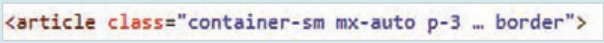
هر دو استایل عنصر article را از فایل styles.css حذف کنید.
فایلهای HTML و CSS را ذخیره کنید و نتیجه را در مرورگر بررسی کنید. با این تغییر، پهنای عنصر article برای دستگاههایی با پهنای صفحه 576 پیکسل و بزرگتر، توسط کلاس container تعیین میشود و برای دستگاههای کوچکتر، پهنای عنصر برابر 100% خواهد بود.
بخش سوم کار با کلاسهای display در کارگاه «طراحی Toolbar» یک نوار ابزار در بالای صفحه، طراحی شد. گزینههای «ثبت نام|ورود» و لوگوی آن در نمای موبایل مخفی شد و در پایین صفحه درون یک لایه جدید با نام bottom-toolbar قرار گرفت. هدف این کارگاه این است که کنترل نمایش/عدم نمایش عناصر لایههای toolbar و bottom-toolbar به کلاسهای *-d سپرده شود و کدهای CSS مربوط به آنها حذف گردد.
صفحه ۱۷۰
ابتدا کلاس d-flex و d-lg-none را به مجموعه کلاسهای عنصر bottom-toolbar اضافه کنید:
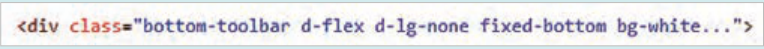
ویژگی display:none را از مجموعه ویژگیهای عنصر .bottom-toolbar در فایل styles.css حذف کنید.
در قانون media، انتخابگر .bottom-toolbar را حذف کنید. فایل را ذخیره و نتیجه را در مرورگر بررسی کنید.
برای مخفی کردن دو عنصر «ثبت نام|ورود» و لوگو در پهنای کمتر از 992 پیکسل، کلاسهای d-none و d-lg-block را به عناصر signin-signup و logo در عنصر toolbar اضافه کنید:
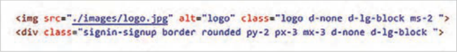
بعد از اضافه کردن کلاسهای *-d، استایل زیر را از قانون media حذف کنید.
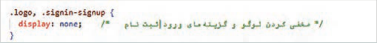
فایل را ذخیره و نتیجه را در مرورگر بررسی کنید. انتظار میرود که در دستگاههای 992 پیکسل و بزرگتر، چهار عنصر لوگو، کادر جستوجو، گزینه «ورود|ثبت نام» و سبد خرید حضور داشته باشند، اما در دستگاههای کوچکتر، دو عنصر لوگو و «ورود|ثبت نام» مخفی شوند.
برای کنترل مقدار فضای اضافی در اطراف عنصر Toolbar، کلاس p-3 را به عنصر toolbar اختصاص دهید و سپس ویژگی padding را در کلاس toolbar حذف کنید. از کشوی Dimension در مرورگر، گزینۀ Responsive را انتخاب کنید و سپس نتیجۀ کار را بررسی کنید.
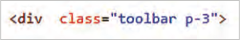
بخش چهارم ایجاد تصویر واکنش گرا هدف این بخش اضافه کردن یک بنر به بالای عنصر toolbar است، بهطوریکه تصویر بنر نسبت به پهنای صفحه واکنشگرا باشد. برای این کار تصویر top-banner.jpg را در ابتدای برچسب <header> درج کنید و کلاس img-fluid را برای آن استفاده کنید:
>"class="img-fluid w-100 "img src="./images/top-banner.gif<
کلاس img-fluid یکی از کلاسهای مهم Bootstrap برای واکنشگرا کردن تصاویر است و باعث میشود که تصویر متناسب با اندازۀ والدش تغییر اندازه دهد؛ از عرض container بزرگتر نشود و همچنین در موبایل، تبلت و دسکتاپ درست نمایش داده شود.
صفحه ۱۷۱
البته ایجاد تصویر واکنشگرا به استفاده از کلاس img-fluid خلاصه نمیشود. بهتر است در خصوص تصاویری که تمام پهنا را اشغال میکنند، نسخۀ دیگری از تصویر برای دستگاههای کوچکتر طراحی شود. در مثال زیر سه نسخه از تصویر بنر برای موبایل، تبلت و دسکتاپ استفاده شده است. مرورگر با توجه به پهنای صفحه، تصویر مناسب را برای نمایش انتخاب میکند:
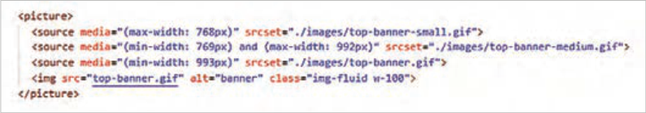
اکثر مرورگرهای مدرن امروزی از برچسب picture پشتیبانی میکنند؛ بنابراین در مرورگرهای مدرن، تصاویری که در برچسبهای <source> تعیین شده است، نمایش داده میشوند. در مرورگرهای قدیمی مانند اینترنت اکسپلورر 11 و قدیمیتر، تصویر پیشفرض ظاهر میشود. در کد شکل بالا، تصویر پیشفرض در برچسب <img> مشخص شده است.
فعالیت
سه تصویر بنر در سه اندازه مختلف، برای نمایش در موبایل، تبلت و دسکتاپ طراحیکنید و کدنویسی نمایش آنها را مطابق با کد فوق انجام دهید. انتظار میرود خروجی به صورت شکل زیر حاصل گردد.
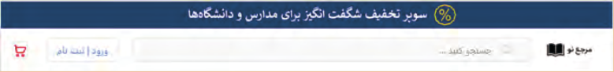
توجه
چنانچه لبههای بنر مماس با لبههای مرورگر نیست، مقدار padding و margin را برای عنصر header برابر صفر قرار دهید.
اجزای رابط کاربری (User Interface Components)
کاربران صفحات وب توسط اجزای مختلفی با صفحه وب تعامل و ارتباط دارند. این اجزا شامل دکمهها، منوها، نوار جستوجو، آیکنها، فرمها، تصاویر، رنگها، فونتها و سایر عناصر بصری هستند که تجربه کاربری را شکل میدهند. بوتاسترپ دارای مجموعهای از کلاسهای آماده برای اجزای رابط کاربری مختلف مانند نوارناوبری، فرم، دکمه، منوی آکاردئون و... است که در این بخش به آنها پرداخته میشود.
صفحه ۱۷۲
Navbar
کلاس navbar برای ایجاد نوار ناوبری (Navigation Bar) یا منوی بالای صفحه استفاده میشود. این کلاس بههمراه کلاسهای دیگری همچون *-navbar-expand برای تعیین رفتار و ظاهر نوار ناوبری در اندازههای مختلف صفحه نمایش به کار میرود. مجموعۀ کلاسهای Navbar به شرح زیر است:
navbar: کلاس اصلی برای ایجاد نوار ناوبری است.
*-navbar-expand: این کلاسها تعیین میکنند که نوار ناوبری در چه پهنایی به صورت افقی ظاهر شود و در چه پهنایی جمع شود. کاراکتر * میتواند جایگزین عبارات sm، md، lg یا xl شود. بهطور مثال استفاده از navbar-expand-sm باعث میشود که نوار ناوبری در دستگاههایی با عرض 576 پیکسل و بیشتر، بهصورت افقی ظاهر شود و در دستگاههای کوچکتر جمع شده و به شکل دکمه همبرگری (☰) نمایش داده شود.
navbar-brand: برای نمایش لوگو یا نام برند در نوار ناوبری استفاده میشود.
navbar-nav: برای ایجاد لیست ناوبری (Navigation list) در نوار ناوبری استفاده میشود.
nav-link: برای لینکهای موجود در لیست ناوبری استفاده میشود.
navbar-toggler: برای دکمۀ کوچک منو استفاده میشود. این دکمه در نمای موبایل ظاهر میشود تا کاربر با کلیک روی آن، محتوای منو را مشاهده نماید و با کلیک مجدد منو را ببندد. (دکمهای برای کنترل باز و بسته شدن منو ایجاد میکند) navbar-toggler-icon: به منظور نمایش آیکن همبرگر (☰) برای دکمه منو در حالت جمعشده بهکار میرود.
navbar-collapse: برای گروهبندی و مخفی کردن گزینههای منو در دستگاههای کوچک استفاده میشود.
dropdown: برای ایجاد منوهای کشویی (پایین افتادنی) در نوار ناوبری بهکار میرود.
navbar-light و navbar-dark: برای تعیین رنگ محتوای نوار ناوبری استفاده میشود تا خوانایی عناصر درون آن حفظ شود. کلاس navbar-light موجب ایجاد یک نوار ناوبری با پس زمینه روشن و رنگ متن تیره میگردد و کلاسnavbar-dark یک نوار ناوبری با پسزمینۀ تیره و متنهای روشن ایجاد میکند.
انتخاب صحیح این کلاسها باعث افزایش خوانایی و بهبود تجربه کاربری میشود.